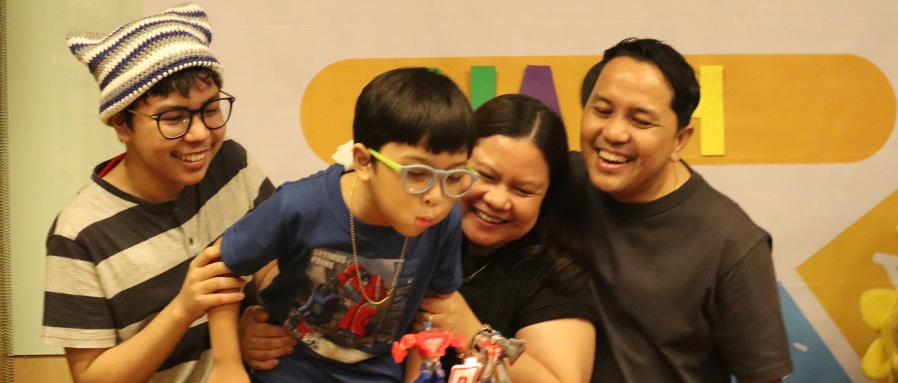

God-Centered Learning
Noli and Lowella with Nate and Nash (Grade 2) | Homeschooling Since 2021

For nearly four years, homeschooling Nash has been the best decision for our family. Though it's a challenging endeavor, it has made us more dependent on God and on each other. Our main goal is to help him grow in his love for God and others, and homeschooling lets us do just that. The flexibility allows us to tailor his education to his strengths and passions while keeping it God-focused. As a result, we learn together and grow closer as a family, making education a joyful, shared journey.
Additionally, Nash is also able to practice his mother tongue through homeschooling. The videos below show Nash's journey in exploring and learning the Filipino language in a fun way under the supervision of his parents.